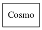

Module: cosmo_tools¶
This module contains the class Cosmo, implementing cosmological calculations following Hogg 1999 (http://arxiv.org/abs/astroph/9905116)
Classes and Inheritance Structure¶

Cosmo([units, Omega_m, Omega_l, Omega_k, …]) |
This class sets-up a cosmological framework to evalute comosmological distances and volume. |
Classes relations¶

Module API¶
-
class
BlazarSEDFit.cosmo_tools.Cosmo(units=None, Omega_m=None, Omega_l=None, Omega_k=None, H_0=None, steps_DC=None, steps_dVC=None)[source]¶ Bases:
objectThis class sets-up a cosmological framework to evalute comosmological distances and volume. Calculations are done following Hogg 1999
Parameters: - units – (str), units for distances “cm”, or “Gpc”, or “Mpc”
- Omega_m – (float), if not provided taken from BlazarSED code value
- Omega_l – (float), if not provided taken from BlazarSED code value
- Omega_k – (float), if not provided taken from BlazarSED code value
-
DA(z)[source]¶ evaluates the angular distance
Parameters: z – (float) redhsift Returns: angular distance
-
DC(z)[source]¶ evaluates the comoving (line-of-sight) distance
Parameters: z – (float) redhsift Returns: comoving (line-of-sight) distance
-
DL(z)[source]¶ evaluates the luminosity distance
Parameters: z – (float) redhsift Returns: luminosity distance
-
DM(z)[source]¶ evaluates the comoving (transverse) distance
Parameters: z – (float) redhsift Returns: comoving (transverse) distance